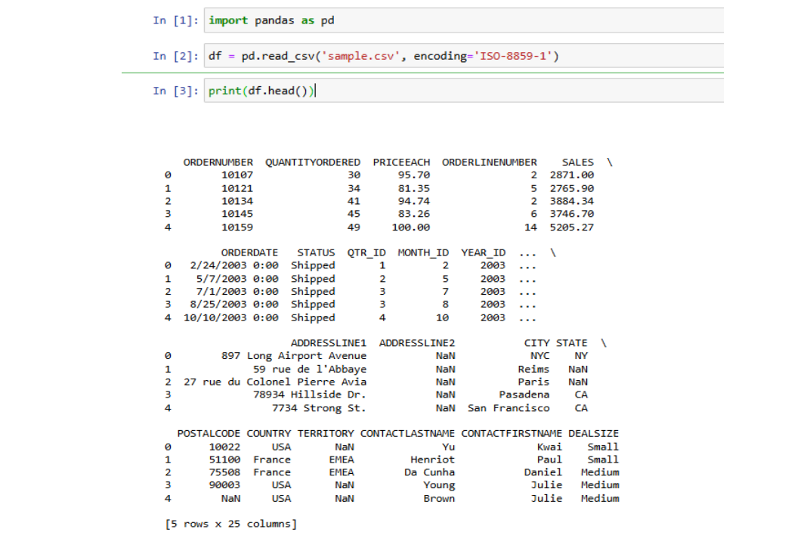
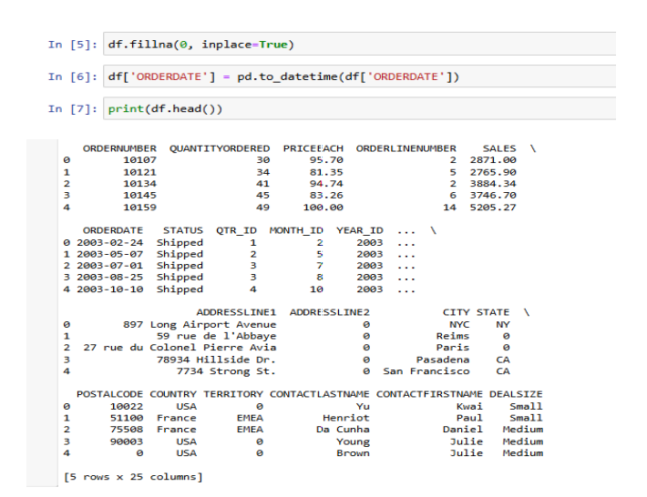
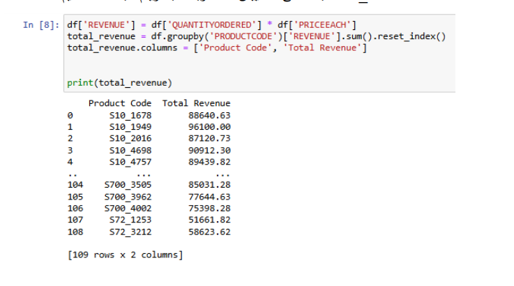
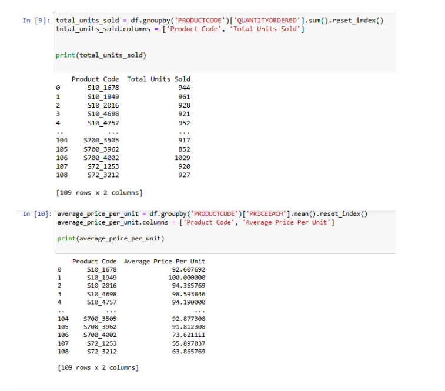
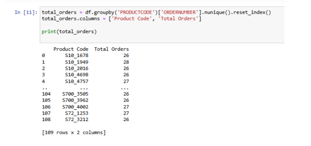
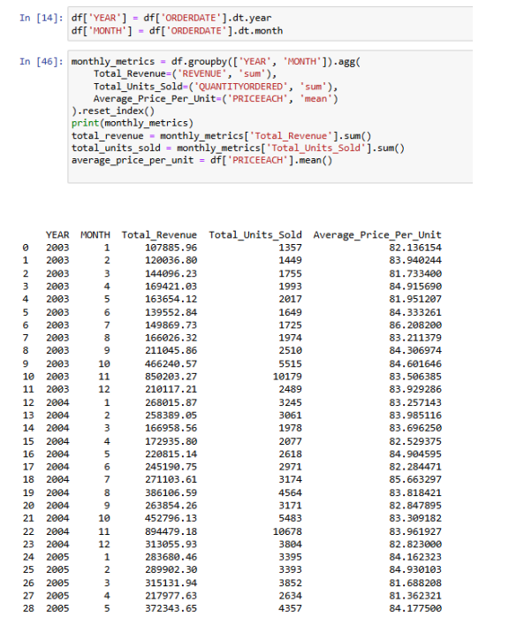
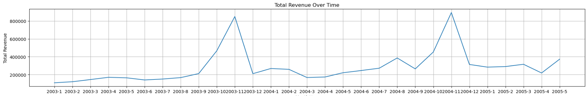
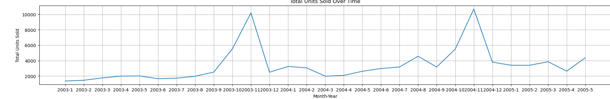
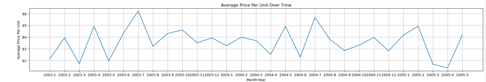
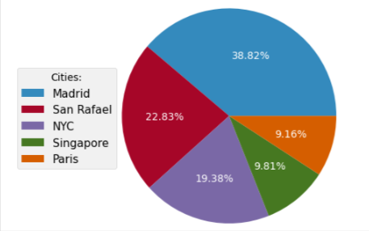

الخطوات الأساسية التي قمنا بها لتحليل البيانات:
- تحميل ومعاينة البيانات: تم تحميل بيانات المبيعات من ملف CSV باستخدام مكتبة Pandas، وعُرضت أولى الصفوف للتحقق من اكتمال العملية بنجاح 
- فحص وتنظيف البيانات: فُحصت القيم المفقودة في الأعمدة وتم استبدال الفراغات بصفر. كما جرى تحويل عمود "ORDERDATE" إلى صيغة تاريخية لضمان دقة البيانات 
- تحليل المنتج: جُمعَت البيانات حسب رمز المنتج لحساب مؤشرات الأداء، بما في ذلك إجمالي الإيرادات، وعدد الوحدات المباعة، ومتوسط السعر للوحدة   
- تحليل شهري وسنوي: تم استخراج الشهر والسنة من عمود التاريخ وحُسبت مؤشرات الأداء لكل فترة زمنية، مما يسمح بمراقبة التغييرات والتوجهات بمرور الوقت. 
تَمّ رسم تغيرات المؤشرات الشهرية والسنوية باستخدام مكتبة Matplotlib، ما يتيح متابعة الاتجاهات الموسمية وفهم الأداء الزمني بوضوح.
Total Revenue Over Time
Total Units Sold Over Time
Average Price Per Unit Over Time

أفضل 5 مدن تحقق فيها الشركة أعلى مبيعات
Top 5 Revenue Cities
يمكننا تقديم التوصيات بشكل عام للشركة بناءً على ماسبق:
- . دراسة السوق: إجراء دراسة لمتطلبات السوق لفهم تفضيلات واحتياجات العملاء في المدن الأخرى.
- الإعلانات المستهدفة: تطوير حملات إعلانية مستهدفة مصممة خصيصًا للعملاء المحتملين في المدن ذات المبيعات المنخفضة
- توسيع التوزيع: زيادة توافر المنتجات في المدن ذات المبيعات المنخفضة من خلال الشراكات مع تجار التجزئة المحليين أو المنصات الإلكترونية
- إشراك العملاء: التفاعل مع العملاء في المدن ذات المبيعات المنخفضة من خلال العروض الترويجية أو الفعاليات لزيادة الوعي بالعلامة التجارية والولاء لها.
- تنويع المنتجات: تقديم منتجات أو خدمات جديدة تلبِّي الاحتياجات والتفضيلات المحددة للعملاء في المدن ذات المبيعات المنخفضة.